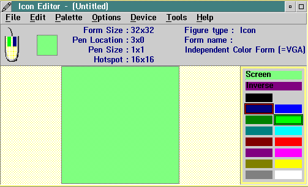

To start the Icon Editor, select the PM Development Tools folder, and then select the Icon Editor object. The following window is displayed:

Notice the information area at the top of the Icon Editor window; the items displayed from left to right include:
The palette window, in the lower-right corner, displays the colors that are available for use during editing. The colors currently selected are marked with frames.
The editing window is the largest part of your working area. Use the mouse to paint the enlarged representation with the selected color.
The menu-bar choices provide access to the many functions of the Icon Editor. These choices enable you to: